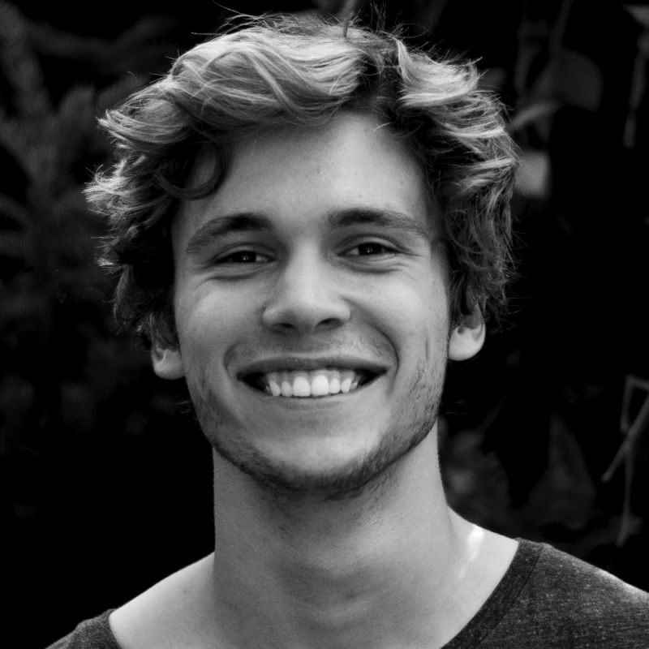

Channel art
Uriel's round 4 asset set for the channel, redrawn in the current system: banner, channel page, avatar, podcast cover, lower third and watermark, and the About text.
- Paper or night grounds, ink or chalk woodcuts, Polyamine for the name; colour only from photographs and the logo.
- Everything that must be seen sits inside the 1546 × 423 safe area; the swallows and mountains outside it are for desktop and TV.
- Each piece is a fixed artboard at upload size; export at that size. Photos and the guest are placeholders.
- Thumbnails, including the podcast cover, are on the thumbnails page.
Banner and mobile crop
One 2560 × 1440 upload. Phones show only the middle 1546 × 423, so the logo, name and tagline live there. Desktops show the full-width strip, where three swallows fly in from the left and a range of mountains closes the right.
How the channel page reads
The banner, avatar, name, handle and tagline together, on YouTube's light and dark themes. The paper banner sits naturally on light; the night banner on dark.
Light, with the proposed swallow avatar; dark, with the current logo.
Avatar, from 176 to 24 pixels
YouTube shows the 800 × 800 avatar as a circle: 176px on the channel page, 98px in search, 48px beside comments, 24px in the top bar. The current logo's fingerprints turn to noise below about 48px. The proposal is the woodcut swallow alone, in ink on white: it holds its shape at 24px and is already the seal on the site.
Over the Mountains episode cover
The same artboard as the podcast guest thumbnail (.thumb--guest): a mountain under a dark shade, the guest in greyscale, a short title. Used as the episode's thumbnail and as the still before the conversation starts.


We are already practising it

The land remembers us
Lower third and watermark
The lower third introduces the guest on a torn white slip: the podcast in Apfel, the name in Polyamine, one line about them. The watermark is the avatar's swallow on its white disc, bottom right, where YouTube puts it.

Guest Name
Writer and gardener, Gardens of ChangeWatermark, 150 × 150, actual size. Export the circle on a transparent ground. The same file as the proposed avatar, so one mark carries across the channel.
About panel
Description
Seeds of Renaissance (SoR) is a place for seekers who sense the impending death of old paradigms and long for the ideas, the practice, and the company to help birth the new.
We are a media house and space of belonging, offering mythos and language for what we already feel. Our content gives people a place to encounter and make sense of this new mythos and provides places of belonging where practice, sense-making, and creating together move society towards an emerging vision of a wiser, weller world.
Together we will make the art, ideas and actions for what comes next.
Join our newsletter to never miss an episode of the Seeds of Renaissance Podcast and to stay up to date on what’s happening at SoR and in the broader community of seekers ushering in what’s to come.
Links
- YouTubelink to fill
- Substacklink to fill
- Instagram@seedsofrenaissance
- Facebookfacebook.com/seeds0frenaissance
- X@SeedRenaissance
- LinkedInlinkedin.com/company/seedsofrenaissance
- Linktreelinktr.ee/seedsofrenaissance
- Websitesecondrenaissance.net